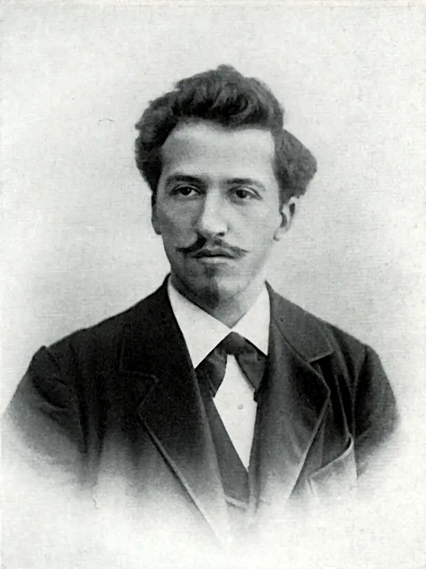
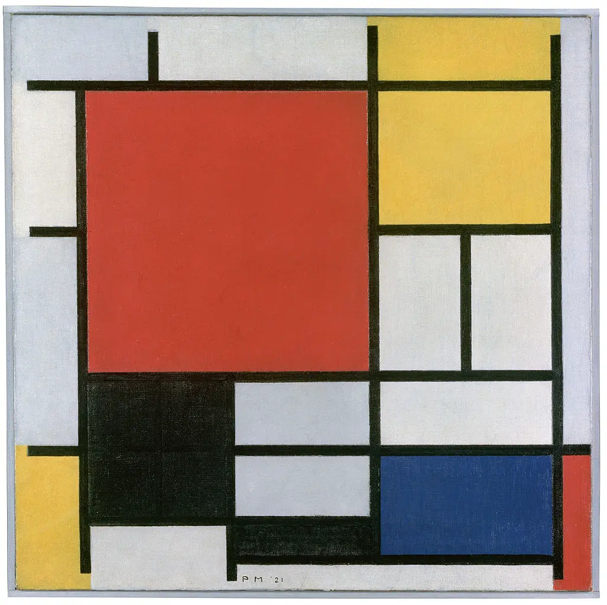
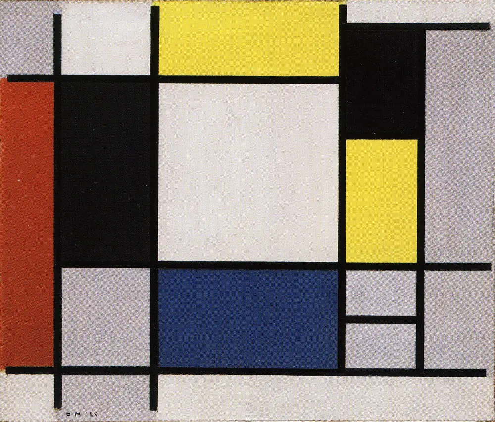

Piet Mondrian is a Dutch painter who has carved a unique niche for himself on the global platform matching the likes of other celebrity painters. He is possibly best known for being one of the founders of the De Stijl, which incorporated an art movement that worked around abstract works, and the new art forms that were being introduced to the world in the early 20th century. The movement was also based on the reductive theory; which took a larger scale image, and brought it to life on the canvas, in architectural works, and in sculpture forms, and in the form of graphic arts as well.
His most famous works:


About Piet Mondrian